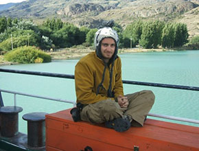
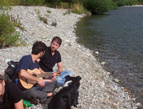

I bought this guitar on a trip to South America. At the time I was already travelling for
3 months

in Argentina. I found it on a side shop on Buenos Aires's main street -
Avinida de Maio
Buying it made everything easier; it became my main socialising tool. I never thought this guitar would outlast the entire trip, so I treated it without much care, lending it to whomever wanted to jam

.
After seven months on the road - it came back home with me, to my living room.
Buying it made everything easier; it became my main socialising tool. I never thought this guitar would outlast the entire trip, so I treated it without much care, lending it to whomever wanted to jam
After seven months on the road - it came back home with me, to my living room.